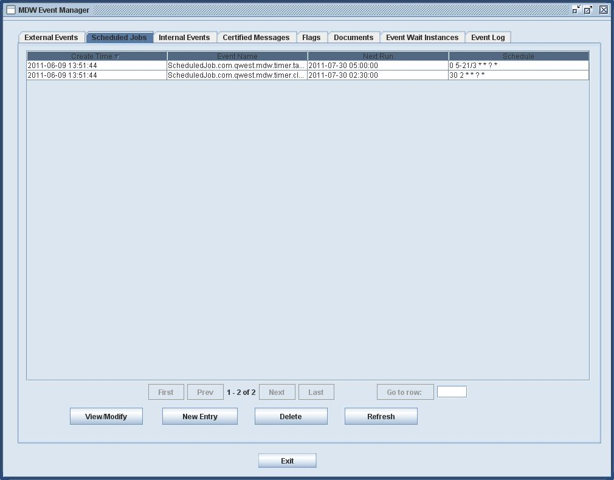
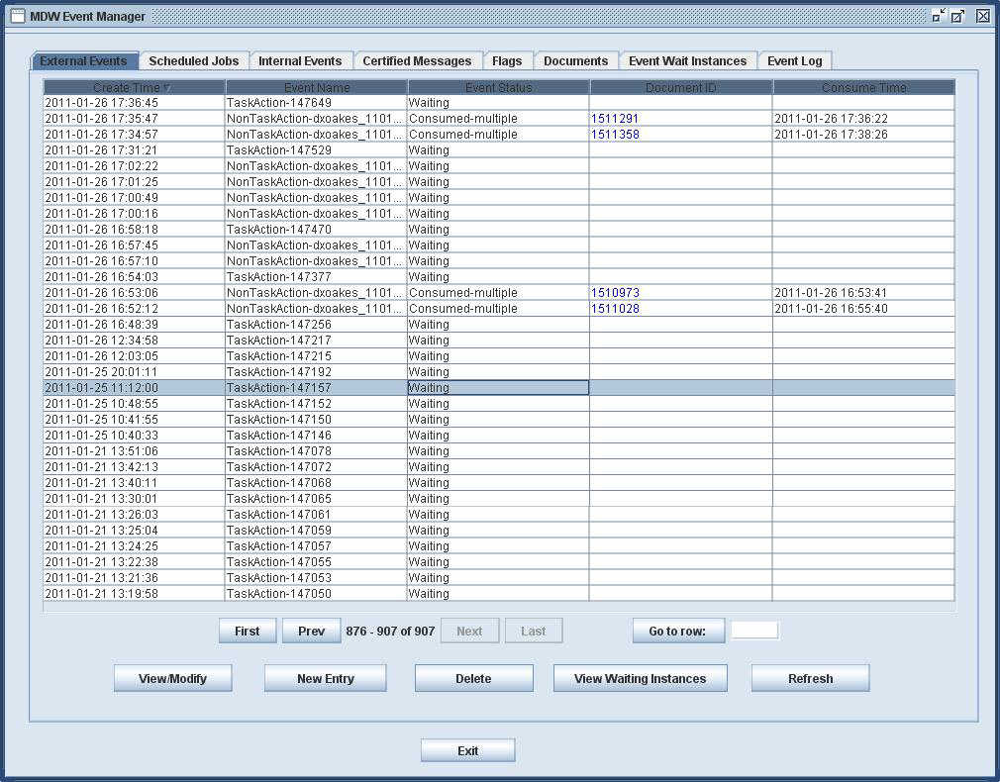
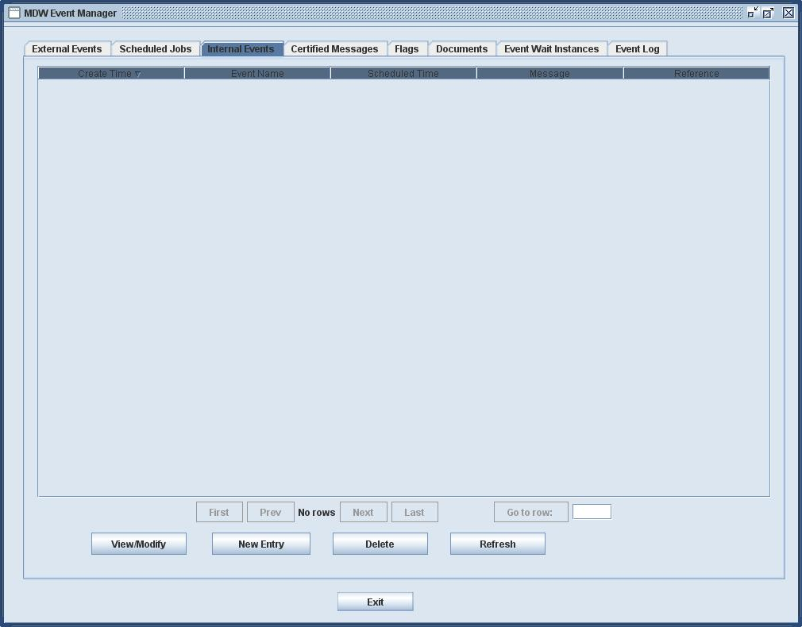
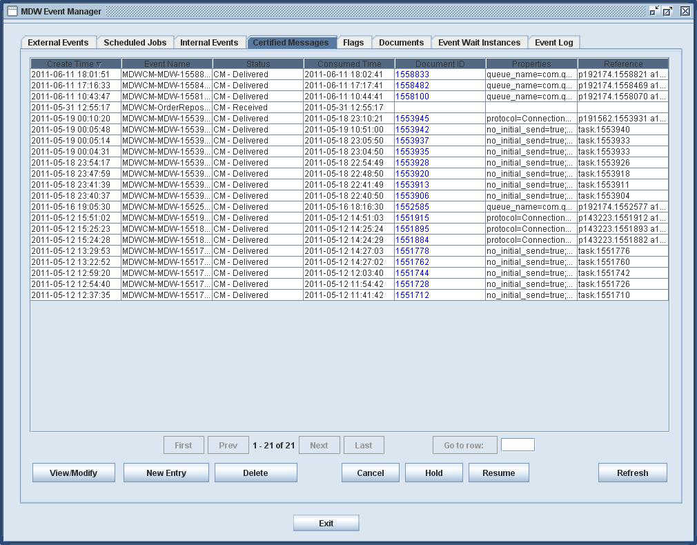
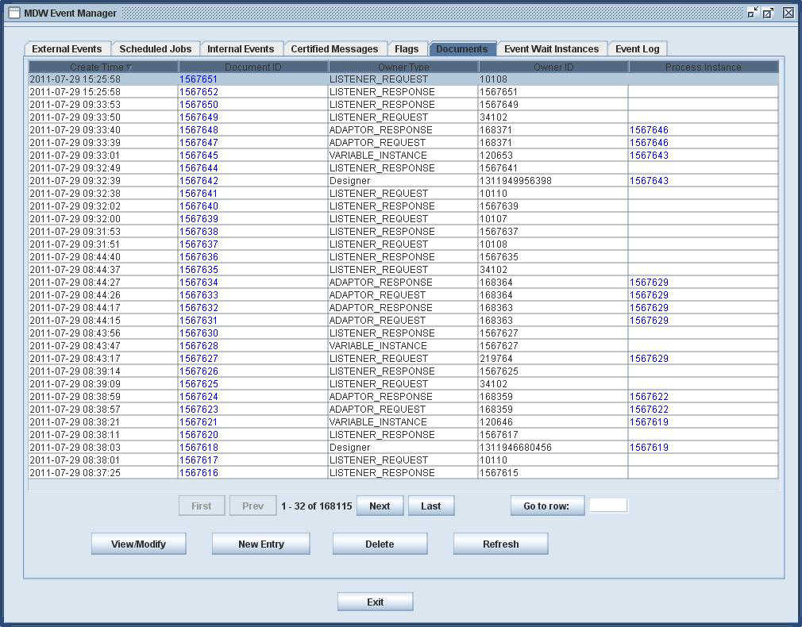
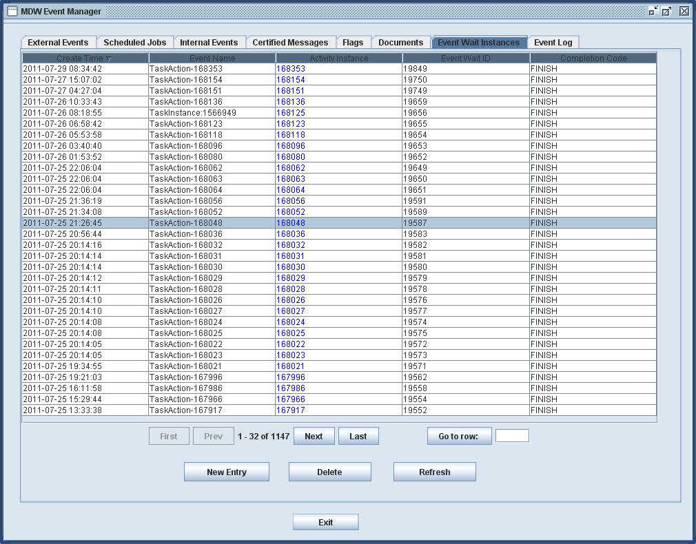

Managing Events
MDW provides an event management GUI, accessible through
Eclipse Designer by right-clicking on the workflow project in Process Explorer view and selecting Swing Tools > Event Manager.
EventManager can be used to view and manage both external and internal events, as well as
other event-like things such as certified messages, scheduled jobs, and event logs.
The event manager has a tab for each type of events it manages.
Event Manager is meant as a diagnostic tool for troubleshooting.
The preferred way to configure Scheduled Jobs is through the MDW properties file as described in the
Scheduled Jobs documentation.
The Scheduled Jobs tab is used to manage scheduled jobs (known previously as
as timer tasks). The scheduled jobs are also stored in the database table EVENT_INSTANCE,
with STATUS_CD having the value 5.
The following picture shows the tab as seen in the classic Designer.

The descriptions of the columns are as follows:
- Create Time: the time when the scheduled job is created.
- Event Name: has the format
ScheduledJob.java-timer-task-class-name and
it can take optional arguments in the same syntax as URL arguments.
This is to ensure that event names are unique among all entries in the EVENT_INSTANCE table.
- Next Run: the time for the next scheduled run.
- Schedule: a cron expression defining the schedule of the job.
You can use the command buttons on this screen to create, modify and delete
scheduled jobs.
Managing External Events
The External Events tab is used to manage entries in the database table EVENT_INSTANCE
that are used to match external events with registered waiting activity instances
(with STATUS_CD 0, 1, 2 and 3, whose meanings are explained below).
The following picture shows the tab as seen in the classic Designer.

The descriptions of the columns are as follows:
- Create Time: the time when the entry is created, either when the external
event arrives, or when an activity registers waiting for it, whichever happens
first.
- Event Name: this is unique among all entries in the EVENT_INSTANCE table.
- Event Status: the English description of STATUS_CD. They can be:
- “Waiting” (0 - ): an activity is waiting for the event,
which has not arrived yet. The event can recur but cannot have multiple
waiting activity instances.
- “Waiting-multiple” (1): one or more activity is waiting
for the event which has not arrived yet. The event cannot recur but
can have multiple waiting activity instances.
- “Arrived” (2): the event has arrived, but no activity instance
is registered to consume it.
- “Consumed-multiple” (3): the event is arrived and
has also been consumed by at least one activity instance. The event cannot
recur but can have multiple activity instances registered to consume it.
Note for event that can recur, once it is consumed, the entry is removed from
the database, hence there is not a status such as “Consumed” for it.
- Document ID. If the message has arrived, the ID of the document holding the message
is shown here. Double-click on the entry will show the message content in a dialog.
- Consume Time: the time the event is consumed. In case of multiple waiting instances,
this is the time the even is last consumed.
You can use the command buttons on this screen to manually create, modify and delete
the entries, although this functionality is provided only for recovering from bad system
errors, and should be used with extreme caution.
You can also view which activity instances are waiting for the event, using
the button “View Waiting Instances”
Managing Internal Events
The Internal Events tab is used to manage delayed internal events, which
are used to implement timer wait activities and time out for event wait activities.
The delayed internal events are also stored in the database table EVENT_INSTANCE,
with STATUS_CD having the value 7.

The descriptions of the columns are as follows:
- Create Time: the time when the entry is created.
- Event Name: has the format
InternalEvent.activity-instance-id,
where the activity instance ID is the ID of the timer wait or event wait
activity instance.
This is to ensure that event names are unique among all entries in the EVENT_INSTANCE table.
- Scheduled Time: the time when the internal event should be fired.
- Message: the actual internal event message content.
- Reference: this field is not currently used.
You can use the command buttons on this screen to manually create, modify and delete
the entries, although this functionality is provided only for recovering from bad system
errors, and should be used with extreme caution.
Managing Certified Messages
The Certified Messages tab is used to manage certified JMS or connection
pool messages. These are also stored in the database table EVENT_INSTANCE,
with STATUS_CD 6, 8, 9, 10 and 11, whose meanings are explained below.
The following picture shows the tab as seen in the classic Designer.

The descriptions of the columns are as follows:
- Create Time: the time when the certified message is created.
- Event Name: it has the format
MDWCM-sender-app-name-message-document-id.
- Status: the English description of STATUS_CD. They can be:
- “Certified Message” (6 - ): The message is
not yet delivered, but will be retried automatically.
- “CM - on hold” (8): the message has been
put on hold, namely will not be automatically retried.
The system will automatically put a message on hold
when it has made maximum number of retries without
being successful. You can also use the Event Manager
to put a message on hold manually.
- “CM - Cancelled” (9): the message has been
cancelled (you can cancel a message not delivered yet
in this Event Manager, described below).
- “CM - Delivered” (10): the message has been
delivered. The entry is not deleted as the certification.
- “CM - Received” (11): the above 4 statuses
are for the message sender. This status is for
the message receiver, and it is just used to certify
that the message is indeed received.
- Consumed Time: the time when the message is delivered (from sender point of view),
or received (from receiver point of view).
- Document ID. The ID of the document holding the message on the sender side.
The field is not populated on the receiver side. Double-click on the entry will show the message content in a dialog.
- Properties. Configuration properties. See documentation
on certified JMS messages (follow this link) and certified connection
pool messages (follow this link) for explanations.
- Reference: this field is used to identify who is sending the certified messages.
The value is set by API call to send certified messages. MDW internal code
sets this to the log tag (process definition/instance ID
and activity definition/instance ID) of the activity instance when the
message is sent from an activity (e.g. certified email messages
sent by the notification activity), and sets this to task instance ID
when the message is sent from a manual task instance.
You can use the command buttons on this screen to manually create, modify and delete
the entries, although this functionality is provided only for recovering from bad system
errors, and should be used with extreme caution.
You can also change status of the messages here, such
as cancelling the message, putting it on hold, and resuming retries.
Note even when the system puts the message on hold after maximum
number of retry failures, you can still manually resume retries,
and the auto retry counter is reset in this case, implying the system
will again retry up to specified maximum number of times.
Using and Managing Runtime Flags
The Flags tab is used to manage run time flags - events recorded
and checked by API, typically in custom activity
implementors or custom event handlers. It is used to indicate whether an event
has happened, and is another way to coordinate between
independent processes. The run time flags are also stored in the database
table EVENT_INSTANCE,
with STATUS_CD having the value 4.
The following picture shows the tab as seen in the classic Designer.

The descriptions of the columns are as follows:
- Create Time: the time when the flag is created.
- Event Name: this is unique among all entries in the EVENT_INSTANCE table.
- Preserve internal: the number of seconds this entry must be minimally
kept in the database, before the clean-up script removes it.
- Reference: the value is for searching purpose and set by API call.
You can use the command buttons on this screen to manually create, modify and delete
the entries.
Managing Documents
The Documents tab is used to manage documents, entries
in the database table DOCUMENT.
The following picture shows the tab as seen in the classic Designer.

The descriptions of the columns are as follows:
- Create Time: the time when the document is created.
- Document ID: the ID of the document. Double click on this
will show the content of the document in a dialog box,
and you can actually modify its content, type, owner type,
owner ID and associated process instance ID here if you
have runtime data administration privilege.
- Owner Type: the type of the designated owner of the document.
The owner is used for clean up purpose. The document will be cleaned
when its owner is cleaned from the database. The owner type for document
can be:
- LISTENER_REQUEST: the document is the content of an external
event. The owner ID is the external event handler ID or 0 when that
is not available.
- LISTENER_RESPONSE: the document is the content of the message
sent back to the external system after receiving
an external event from it. The owner ID is the
ID of the document holding the request (the external event content).
- ADAPTER_REQUEST: the document is the content of a message
sent to an external system by an adapter activity.
The owner ID is the activity instance ID.
- ADAPTER_RESPONSE: the document is the content of the synchronous
response received from an external system after an adapter
activity sends a message to it.
The owner ID is the activity instance ID. Note that
if the response from the external system is received asynchronously,
it will be picked up by MDW listeners and the document owner
type will be LISTENER_REQUEST.
- VARIABLE_INSTANCE: the document is the content of a document
variable. The owner ID is the variable instance ID.
- TASK_INSTANCE: the document is the form data document
associated with a task instance. The owner ID is the
task instance ID.
- PROCESS_INSTANCE: this is for miscellaneous use
by a process instance, such as documents created
from input parameters when the process instance is started,
documents created as a result of completing manual tasks,
etc.
The owner ID is the process instance ID.
- INTERNAL_EVENT: this is used by signaling - publishing events
by an activity. The owner ID is the activity instance ID.
- Others: used by designer, automated tester, process launcher, etc.
Note for event that can recur, once it is consumed, the entry is removed from
the database, hence there is not a status such as “Consumed” for it.
- Owner ID: The ID of the designated owner of the document.
- Process Instance ID: the ID of the process instance this document
is associated to, if that can be determined.
You can use the command buttons on this screen to manually create, modify and delete
the entries, although this functionality is provided only for recovering from bad system
errors, and should be used with extreme caution.
Managing Event Wait Instances
The Event Wait Instances tab is used to manage entries in the database table
EVENT_WAIT_INSTANCE.
The following picture shows the tab as seen in the classic Designer.

The descriptions of the columns are as follows:
- Create Time: the time when the entry is created.
- Event Name: the event name to wait for. It must exist
in the EVENT_INSTANCE table.
- Activity Instance: the ID of the activity instance waiting for the event.
- Event Wait ID: the unintelligent ID of the row in the table.
- Completion Code: the default completion code when the activity
receives this event. It can be overridden programmatically
in the resume method of the activities.
You can use the command buttons on this screen to manually create and delete
the entries, although this functionality is provided only for recovering from bad system
errors, and should be used with extreme caution.
To modify an entry, simply delete the entry and create a new one, because
the event wait instance ID is not meaningful and does not need to be preserved.
View Event Log
The Event Log tab is used to view entries in the database table EVENT_LOG,
which contains information for auditing purposes.
The following picture shows the tab as seen in the classic Designer.

The descriptions of the columns are as follows:
- Create Time: the time when the entry is created (event occurs).
- Event Name: a descriptive name for the event.
- Event Log ID: the unintelligent ID of the entry.
- Category: AUDIT for user actions, EVENT_HISTORY for external
event registration and de-registration history, SCHEDULED_JOB_HISTORY
for one execution of a scheduled job, etc.
- Subcategory:
- Owner Type:
- Owner ID:
- Comment:
- User: CUID of the user making the change. If the event is a system one,
the system name is entered here.
It is not possible to make changes in this table,
as they represent audit data.
Advanced Management
The rest of this document covers database tables, backward compatibility,
design considerations, etc., and is considered for advanced users.
Database Tables for Event Management
The database table EVENT_INSTANCE is the primary table
for event management. The table is currently used to store the following
types of data:
- External events: matching external events with activities that registered listening the events
- Scheduled jobs
- Internal events: messages between different threads/JVM, including following 3 types:
- delayed message: consumeDate is not null, reference can be null or others,
event name is often InternalEvent.actInstId when the event is for notifying an activity instance
or InternalEvent.procInstIdstartactivityId when the event is to start an activity instance
- resume message due to connection pool down: consumerDate is null, reference is "pool:poolname",
event name is InternalEvent.actInstId
- active message: consumeDate is null, reference is "active"
- Certified messages
- Flags
The following lists all columns of the table:
EVENT_NAME | The primary key |
DOCUMENT_ID | |
STATUS_CD |
This field is used for indicating which type of messages as well as sub classification of status within the type.
The following is the list of all status code:
- 0 (external event - waiting): this is an external event, and an activity has registered to listen, but the event has not arrived yet.
We expect there is only one listener and the event can recur
- 1 (external event - waiting by multiple activities): this is an external event, and at least one activity has registered to listen, but the event has not arrived yet.
We expect there can be multiple activities listening on it and the event cannot recur
- 2 (external event - arrived): an external event has arrived, but no activity has registered as a listener.
- 3 (external event - consumed): an external event has arrived, and at least one activity has registered for listening, so the
event has been consumed by at least one activity. Note that for recurring an external event,
as soon as the event is consumed, the entry is removed from the database, so there is no
corresponding status code, and this status code is only for non-recurring events that can expect multiple listeners
- 4 (flag): a flag indicates something has happened. Set and clear by API only
- 5 (scheduled job): was previously known as timer tasks.
- 7 (internal event):
- 6 (certified message - to be sent): a certified message that has not been successfully sent yet
- 8 (certified message - on hold): a certified message that failed to be sent within maximum number of retries,
and needs to be managed manually
- 9 (certified message - canceled): a certified message that is canceled before being successfully delivered
- 10 (certified message - delivered): a certified message that has been successfully delivered
- 11 (certified message - received):
|
CREATE_DT |
Create date of the event entry |
CONSUME_DT |
For external events and certified messages, this is use |
PRESERVE_INTERVAL | |
AUXDATA | |
REFERENCE | |
COMMENTS | |
With MDW 5.*, three tables are used for event management:
EVENT_INSTANCE, EVENT_WAIT_INSTANCE and
EVENT_LOG.